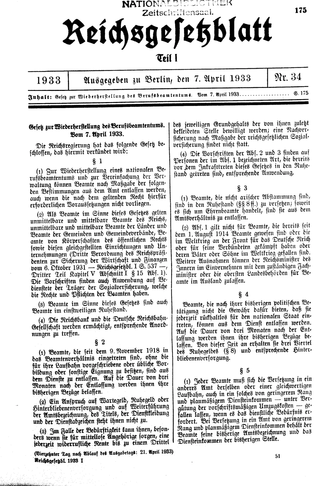
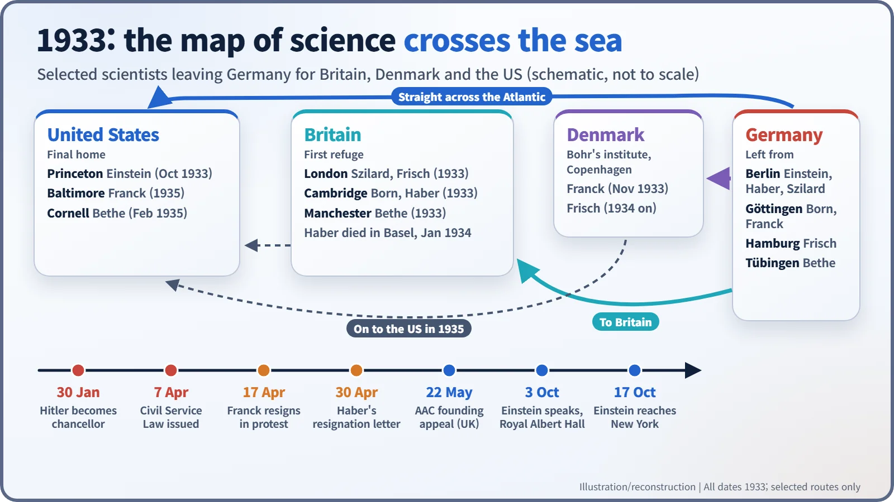
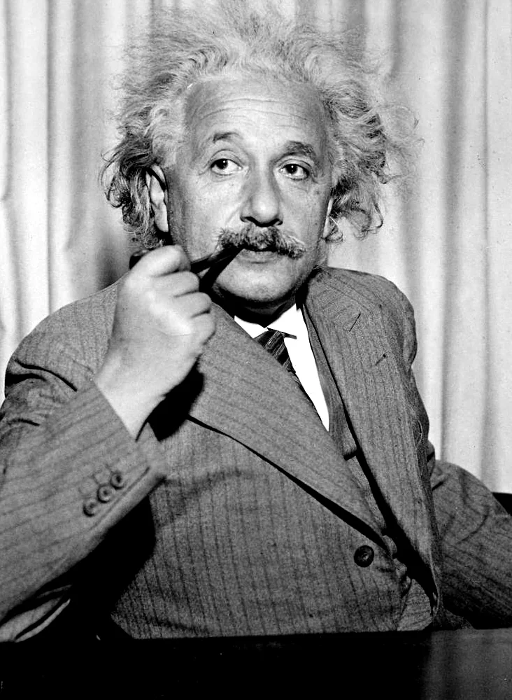
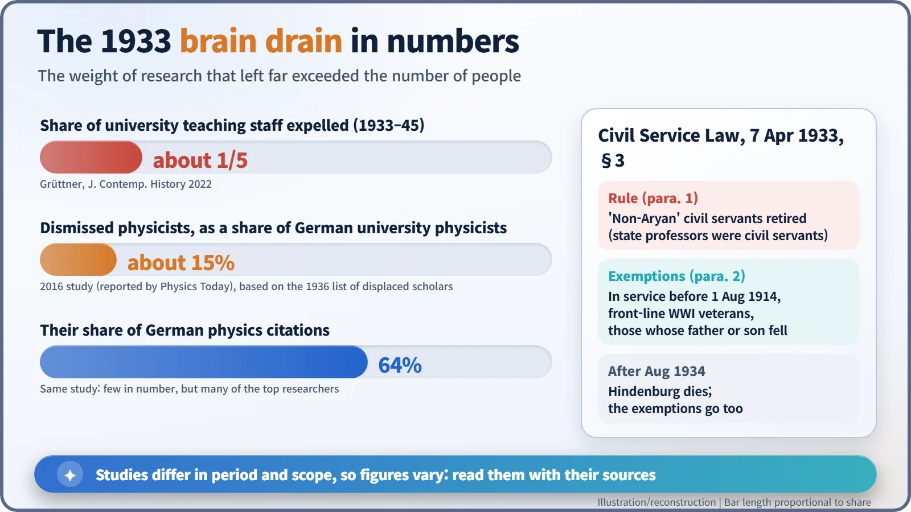

Nuclear History · 050
One Line of Law Redrew the Map of Science — The Nazi Seizure of Power and the Emigration of European Scientists (1933)
A dull-sounding civil service law pushed many of Germany's leading physicists abroad, and the centre of physics began to move across the Atlantic.
On 7 April 1933, barely two months after Hitler became chancellor, a German law ordered "non-Aryan" civil servants, university professors among them, into retirement. Within a year leading scientists such as James Franck, Fritz Haber, Max Born, Hans Bethe and Albert Einstein had left or lost their posts, and British academics set up the Academic Assistance Council to help them. The centre of gravity of physics began to move across the Atlantic.
A finger on the map
In the autumn of 1932, if you had handed a map of Europe to a young person who wanted to learn quantum mechanics, where would their finger have landed? Almost certainly on Germany: Göttingen, Berlin, Leipzig, Munich. This was where matrix mechanics was born and where Nobel laureates walked the corridors. Ask the same question two years later and the finger drifts to Cambridge, to Copenhagen, and across the Atlantic to Princeton. What moved it was not a laboratory breakthrough. It was a single line of law.
A law with a dull name
On 30 January 1933, Adolf Hitler (1889–1945) became chancellor of Germany. A little over two months later, on 7 April, the government issued the Law for the Restoration of the Professional Civil Service. The United States Holocaust Memorial Museum notes that the title was designed to make the legislation seem unremarkable, and calls it the first major piece of Nazi legislation targeting Jews simply because they were Jewish. [2]
The heart of it was Article 3: "Civil servants who are not of Aryan descent are to be retired." Professors at German state universities were civil servants, so the lecture hall was no exception. Article 4 went further, allowing the dismissal of officials judged politically unreliable. [1]

At first there were exemptions. Anyone who had been a civil servant since before 1 August 1914, anyone who had fought at the front in the First World War, and anyone whose father or son had been killed in that war was spared. President Paul von Hindenburg, the old wartime commander, had insisted on them. That shield did not last: after Hindenburg died in August 1934, the exemptions were revoked. [2]
Those who could have stayed
Some of the people the exemptions protected chose to leave anyway. James Franck (1882–1964), winner of the 1925 Nobel Prize in Physics, was covered as a war veteran. On 17 April 1933 he resigned his Göttingen professorship in protest, the first academic resignation in protest against the law. Newspapers around the world reported it; no government or university protested. [7]
Fritz Haber (1868–1934), who received the Nobel Prize in Chemistry for 1918 for the synthesis of ammonia, was in the same position. On 30 April he wrote to the Prussian education minister that, although he was legally entitled to remain, he did not wish to. The research tradition he had lived by, he explained in substance, was in conflict with the views of the new government. After a stay in Cambridge he set out for a new post, and died of heart failure in a hotel in Basel, Switzerland, on 29 January 1934. [7]
Those who did not qualify for the exemptions had no choice at all. Max Born (1882–1970) was suspended that spring along with other Jewish professors at Göttingen and went to Cambridge. Hans Bethe (1906–2005), a young theorist at Tübingen, was dismissed and moved to Manchester, then Bristol, and in February 1935 arrived in the United States to join Cornell University. [7]

The man who did not go back
Albert Einstein was not so much expelled as he simply never returned. When the Nazis took power he was in Pasadena, California. Landing at Antwerp, Belgium, on 28 March 1933, he went to the German consulate, handed in his passport and renounced his German citizenship. On 3 October he spoke on academic freedom at the Royal Albert Hall in London to a crowd reported at about ten thousand, and in mid-October he crossed to the United States to take up his post at the Institute for Advanced Study in Princeton. His arrival in New York is usually given as 17 October. [7]

"Protests butter no parsnips"
The exiles also needed somewhere to land. William Beveridge (1879–1963), Director of the London School of Economics, was in Vienna in the spring of 1933 when he learned of the dismissals. Back in Britain he set up the Academic Assistance Council (AAC). Protests alone, he felt, would "butter no parsnips": they would achieve nothing. Its founding appeal, signed by 41 eminent figures, was made public on 22 May 1933, and Ernest Rutherford became its first president. The organisation still exists today as the Council for At-Risk Academics. [5] [6]
According to a story often told, Leo Szilard (1898–1964), who had left Berlin, met Beveridge in Vienna and urged him to act quickly. Beveridge's own later account does not mention Szilard, however, so how large a part he played differs from source to source. [5]
The numbers
How many left? Because studies cover different periods and groups, no single number tells the story. A 2022 study by Michael Grüttner estimates that about one fifth of German university teaching staff were expelled between 1933 and 1945. In physics, one analysis found that dismissed physicists made up about 15% of physicists at German universities, yet accounted for 64% of all German physics citations. Few in number, they included many of the field's leading researchers. [3] [4]

Even so, it would be too simple to say that Germany failed to build an atomic bomb because its scientists emigrated. Many factors were involved. What is clear is that the centre of gravity of science moved across the Atlantic because of politics, not because of anything that happened in a laboratory.
A bridge to the next era
The story did not end in 1933. In 1938 Lise Meitner would escape from Germany, and Enrico Fermi would leave Italy for the United States. Earlier still, in September 1933, the exile Szilard was waiting at a London street crossing when the idea of a chain reaction driven by neutrons came to him. The age of neutrons and fission was about to begin.